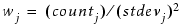

Related Formats: Gauge Object Reference, Super Gauge Data File Format
Sets the weight of enabled gauges by its measurement statistic.
setRMSSDWeight gauge_object
A required argument that specifies an existing gauge object to process.
Sets the weight of enabled gauges to a value determined by the measurement statistics according to its count and standard deviation, using the formula:

Calibre WORKbench performs the summation calculation over all the enabled gauges. It returns an output gauge data object that can be used for calibration purposes. Each gauge object is subjected to a root mean square scaled deviation (RMSSD) weighting if enabled.
The command returns an error if all the count or stdev fields are empty for an enabled gauge object.
For the super gauge data object version of this command, see “sgd_set_rmssd_weight”.
#read gaugedata from file
set bobj [gaugeRead -f gauges.gg]#set gauge weights using the measurement statistics
setRMSSDWeight bobj